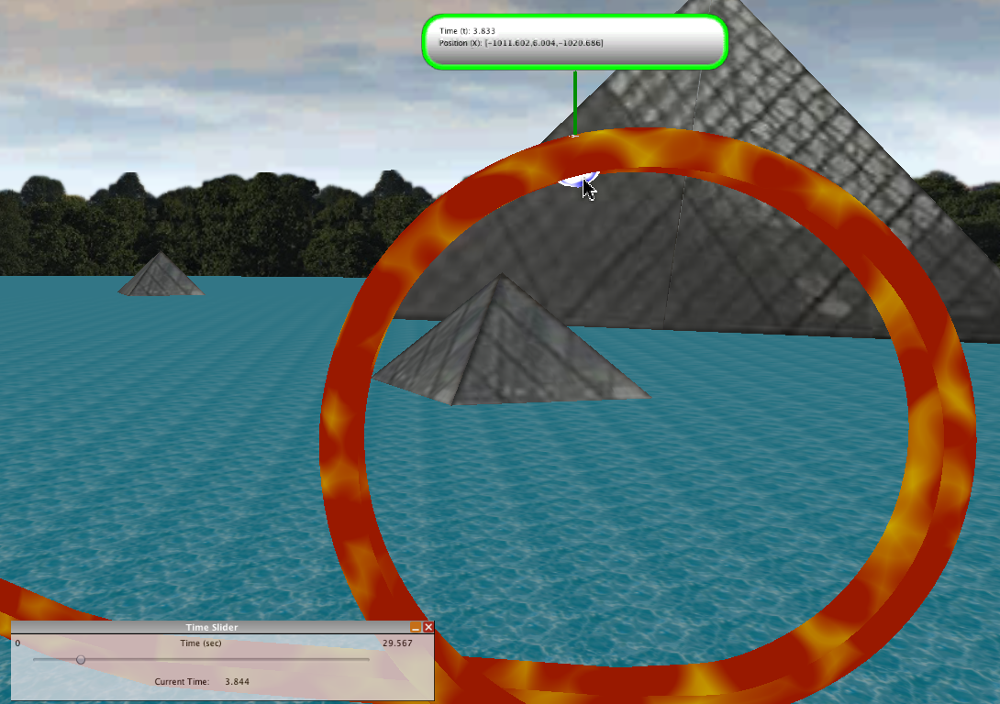

Marbleous is a physics simulation that models a marble rolling down a track. After each marble run, you can examine the physical forces and properties of the marble at any given time in the run. The goal of the application is to help you understand how phenomena such as velocity, acceleration, potential energy, and kinetic energy change over time and with different track configurations.
Note: These instructions assume that the Marbleous module has been installed on your Wonderland server.
Before inserting an instance of Marbleous into your Wonderland world, turn off Avatar Collision using Tools>Avatar Collision Response Enabled. Next, select Insert>Object, click on the Marbleous item in the Object window, and click Insert. Your avatar will be positioned on the track. Navigate away from the track so that you can see the top of the beginning of the track. You can use the scroll wheel on your mouse to zoom your view in and out. It may also be helpful to hold down the Control key while dragging your mouse to look up and down.Press the Run button in the Marbleous Control Panel.
The marble will roll down the track. Once it has run down the track and either fallen off or stopped moving, press the Stop button in the Control Panel. A Time Slider panel will open. This allows you to examine the details of the last run of the marble along the track. The initial state of the slider is time = 0, i.e. the marble is back at the beginning of the track. By moving the slider to the right, the position of the marble is updated according to its last run along the track.
Experiment with moving the slider to see the position of marble. As an example, move the slider so that the marble is about to enter the upward slope of the loop. Click on the marble, to display details of the position of the marble, and the time at which it reached this position. (You may need to move the position of your avatar to get a good view of this.)
Now click in the details pane. This expands the box to include additional details of the marble such as its velocity, acceleration, potential and kinetic energy (Note: you may need to click a few times to get the expanded details to show up). Click again on the details to see an illustration of the equations that provide the results. At this stage, you can click again on the marble or on the details to dismiss them, or return to the time slider to modify the position of the marble. Alternatively, SHIFT-click on the details to cause them to be retained in position. (The border of the details will turn blue. Should you wish to dismiss the details, SHIFT click again to remove the blue border.) Whilst the details are shown with a blue border, adjust the time slider to show the marble at its peak in the loop, and click on the marble to show the details of the marble at that position. Click on the details to reveal extra information and compare the kinetic and potential energy of the marble when at the peak of the loop with that when it enters the loop. SHIFT-click on these details so that they are retained. Now, adjust the time slider so that the marble is just about to leave the loop and enter the first level segment. Click on the marble to reveal its details and then click once on those details to expand them. Now compare the details of the marble in all three positions. Note how the potential and kinetic energy changes, and how much total energy is lost by the marble as it goes through the loop.
Experiment with the Time Slider and viewing the details of the marble.
Once you have completed reviewing the marble simulation, you should reset the simulation to its starting state by clicking on the Reset button in the Marbleous Control Panel HUD. The physics system may also be reset by checking the Reset Physics check box; if this checkbox is not selected, consecutive runs of the marble simulation are based on the results of earlier simulations.
You may modify the track in two ways: adding and removing segments of track; or editing the properties of a segment of track. We'll cover each of these in turn. The track should NOT BE MODIFIED when the simulation is running.
To remove a segment of track, select the track segment in the lower list of track segments of the Marbleous Control Panel and click on the Remove button. To add a segment of track, select a segment type from the upper list of the HUD and click the Add button. A new segment of track, matching the selected type, is added to the end of the track.
To edit the properties of a track segment, first select it from the lower list of track segments, and then click on the Edit... button. The "Segment Editor" will appear. This contains a table of the "knots" in the segment, plus any other properties of the segment that may be edited (for example, the Loop has a radius property). The "knots" of a segment are a mathematical way of describing it, each knot has the following attributes:
The segment editor presents each segment as a table of knots, with the rows of the table corresponding to each knot. You can edit the values of the knot, including its position, its rotation, tension, bias and continuity. (Tooltips are provided to hint at the accepted values for each of these attributes.) Experiment with changing these values, and click Save when you are done to save your values. If you click the Restore button, the original values of the segment will be restored. When you're finished editing, simply close the window.